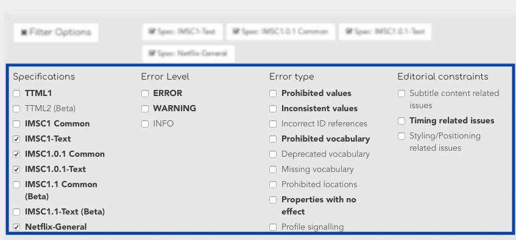

A subcheck application can be used to validate documents against arbitrary schemas and allows users to provide user-defined tags that apply to a given validation message.
The screenshot below shows filtering based on a real-world subtitle validation framework:
Figure 5. Filtering
|  |
The frontend automatically adapts itself to the validation results, in a way that allows users to explore their data with these facets. The screenshot above shows, highlighted in bold, what kinds of messages are contained within the result. Users may check or uncheck these categories to display or hide specific items in the report view.
For example, some users might only be interested in messages with a
WARNING-Level, or maybe only warnings that apply to styling-related
messages.